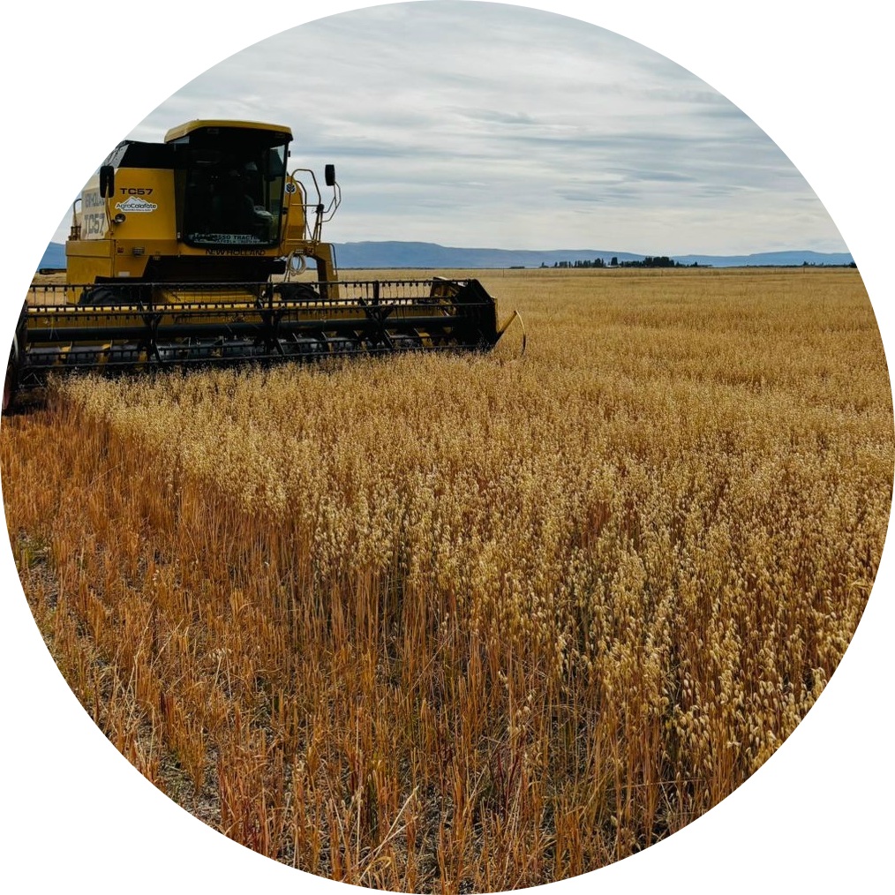

Hecho a mano
Ninguna máquina reemplaza el amasado y el armado manual de cada pieza, pieza por pieza.
Desde 2011
Tres generaciones de la misma familia, la misma receta de la nonna y los mejores ingredientes de Los Antiguos.

Nuestra historia
Pastas del Lago nació en la cocina de nuestra abuela Elsa, inmigrante italiana que se instaló en Los Antiguos en los años '60. Su receta de pasta fresca, aprendida en el Piamonte, se transformó con el tiempo en un pequeño obrador familiar.
Hoy seguimos amasando a mano, todos los días, con harina de productores patagónicos y con la cereza que hace famosa a nuestro pueblo durante la Fiesta Nacional de la Cereza. Cada bandeja que sale de nuestra fábrica lleva ese mismo cariño de la cocina de Elsa.
Nuestro recorrido
2011
Elsa y su hija Marta abren el primer local de pastas caseras en Los Antiguos, con dos mesadas y un molino manual.
2015
Incorporamos la sobasadora y empezamos a proveer a hosterías y restaurantes de la zona del Lago Buenos Aires.
2019
Creamos la línea de rellenas con cereza patagónica, hoy nuestro producto insignia durante la temporada de cosecha.
2026
Nos mudamos a una fábrica más grande sobre Av. 11 de Julio y sumamos venta online para todo Los Antiguos, Perito Moreno y la región.
Lo que nos guía
Ninguna máquina reemplaza el amasado y el armado manual de cada pieza, pieza por pieza.

Compramos harina, huevos y cereza a productores de Los Antiguos y alrededores.
Conocemos a cada cliente por su nombre: eso no cambia aunque la fábrica crezca.